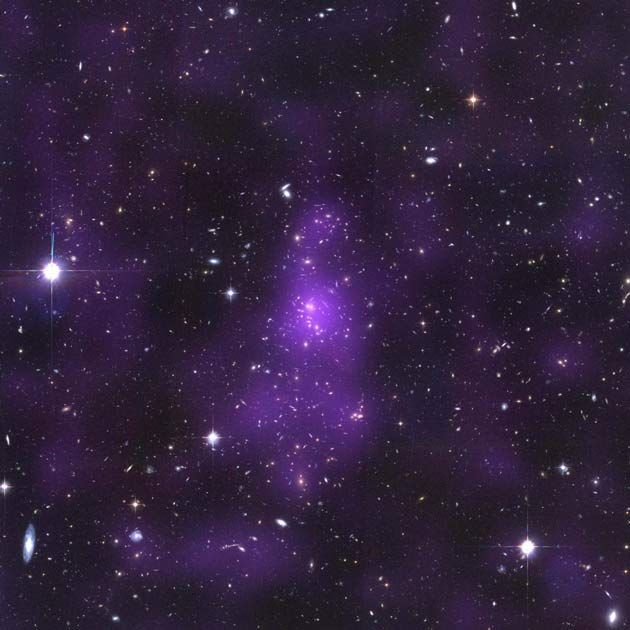
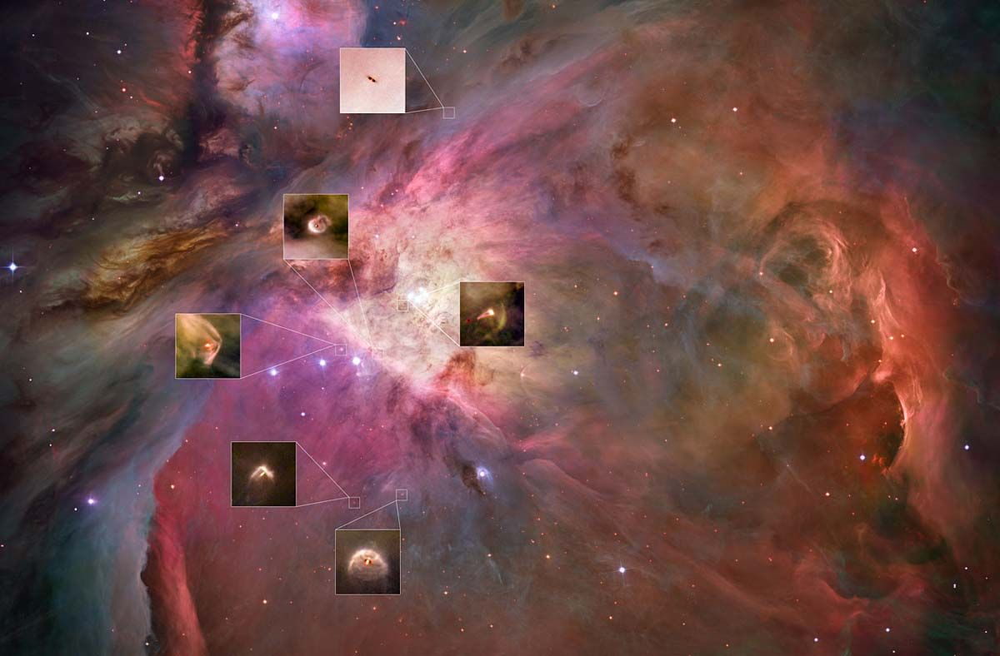
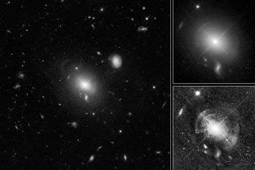

Hubble Space Telescope
Breve Historia
El Observatorio Espacial Hubble, es un telescopio espacial lanzado en 1990 de renombre por ser una pieza fundamental en la investigacion astronómica y en las relaciones públicas de dicho rubro. Nombrado por el astrónomo Edwin Hubble, es uno de los Grandes Observatorios de la NASA.

Ficha Técnica:
- Fecha de Lanzamiento: 24/04/1990
- Estado: Activo
- Fecha de Desactivación: --
Top 3 Descubrimientos
La materia oscura, que es invisible pero revela su presencia gracias a la gravedad, ocupa aproximadamente un 23% del universo. Analizando las distorsiones creadas por la materia oscura al observar la luz emitida por distintas galaxias, Hubble fue una pieza fundamental en la construccion de mapas 3D de grande escala para poder comprender la distribucion de ella en el universo y, asi poder acercarse a entender este fenómeno tan elusivo pero no menos transversal.
Al observar regiones de formacion de estrellas, como la Nebulosa de Orión, Hubble pudo mostrar que los discos protoplanetarios hechos de gas y polvo tienen una presencia altamente frecuente alrededor de estrellas jovenes. Hubble ayudo a demostrar que la idea de que la presencia de planetas alrededor de ellas es un fenómeno altamente comun.
Hubble descubrio que los agujeros negros super masivos probablemente existen en cada galaxia que tenga un cúmula de estrellas en su centro. Sobre el vinculo muy cercano entre el tamaño de estos agujeros negros y el tamaño de las galaxias, Hubble ayudo a entender que ambos evolucionan en concierto, aclarando como el universo evoluciono a lo largo de su historia.